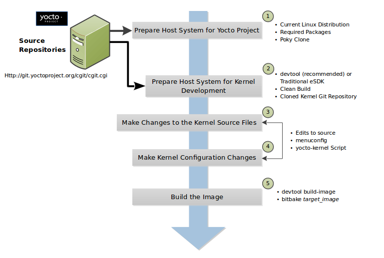

1 Introduction
1.1 Overview
Regardless of how you intend to make use of the Yocto Project, chances are you will work with the Linux kernel. This manual covers the following:
how to set up your build host to support kernel development
coverage of the kernel development process
background information on the Yocto Linux kernel Metadata
common tasks you can perform using the kernel tools
how to use the kernel Metadata needed to work with the kernel inside the Yocto Project
details on how the Yocto Project team develops and maintains Yocto Linux kernel Git repositories and Metadata.
Each Yocto Project release has a set of Yocto Linux kernel recipes, whose Git repositories you can view in the Yocto Source Repositories under the "Yocto Linux Kernel" heading. New recipes for the release track the latest Linux kernel upstream developments from https://www.kernel.org and introduce newly-supported platforms. Previous recipes in the release are refreshed and supported for at least one additional Yocto Project release.
Also included is a Yocto Linux kernel development recipe
(linux-yocto-dev.bb) should you want to work with the very latest in
upstream Yocto Linux kernel development and kernel Metadata development.
Nota
For more on Yocto Linux kernels, see the "Yocto Project Kernel Development and Maintenance" section.
The Yocto Project also provides a powerful set of kernel tools for managing Yocto Linux kernel sources and configuration data. You can use these tools to make a single configuration change, apply multiple patches, or work with your own kernel sources.
In particular, the kernel tools allow you to generate configuration
fragments that specify only what you must, and nothing more.
Configuration fragments only need to contain the highest level visible
CONFIG options as presented by the Yocto Linux kernel menuconfig
system. Contrast this against a complete Yocto Linux kernel .config
file, which includes all the automatically selected CONFIG options.
This efficiency reduces your maintenance effort and allows you to
further separate your configuration in ways that make sense for your
project. A common split separates policy and hardware. For example, all
your kernels might support the proc and sys filesystems, but
only specific boards require sound, USB, or specific drivers. Specifying
these configurations individually allows you to aggregate them together
as needed, but maintains them in only one place. Similar logic applies
to separating source changes.
If you do not maintain your own kernel sources and need to make only minimal changes to the sources, the released recipes provide a vetted base upon which to layer your changes. Doing so allows you to benefit from the continual kernel integration and testing performed during development of the Yocto Project.
If, instead, you have a very specific Linux kernel source tree and are unable to align with one of the official Yocto Linux kernel recipes, you have a way to use the Yocto Project Linux kernel tools with your own kernel sources.
The remainder of this manual provides instructions for completing specific Linux kernel development tasks. These instructions assume you are comfortable working with BitBake recipes and basic open-source development tools. Understanding these concepts will facilitate the process of working with the kernel recipes. If you find you need some additional background, please be sure to review and understand the following documentation:
Yocto Project Quick Build document.
devtool workflow as described in the Yocto Project Application Development and the Extensible Software Development Kit (eSDK) manual.
The "Understanding and Creating Layers" section in the Yocto Project Development Tasks Manual.
The "Kernel Modification Workflow" section.
1.2 Kernel Modification Workflow
Kernel modification involves changing the Yocto Project kernel, which
could involve changing configuration options as well as adding new
kernel recipes. Configuration changes can be added in the form of
configuration fragments, while recipe modification comes through the
kernel's recipes-kernel area in a kernel layer you create.
This section presents a high-level overview of the Yocto Project kernel modification workflow. The illustration and accompanying list provide general information and references for further information.


Set up Your Host Development System to Support Development Using the Yocto Project: See the "Setting Up to Use the Yocto Project" section in the Yocto Project Development Tasks Manual for options on how to get a build host ready to use the Yocto Project.
Set Up Your Host Development System for Kernel Development: It is recommended that you use
devtoolfor kernel development. Alternatively, you can use traditional kernel development methods with the Yocto Project. Either way, there are steps you need to take to get the development environment ready.Using
devtoolrequires that you have a clean build of the image. For more information, see the "Getting Ready to Develop Using devtool" section.Using traditional kernel development requires that you have the kernel source available in an isolated local Git repository. For more information, see the "Getting Ready for Traditional Kernel Development" section.
Make Changes to the Kernel Source Code if applicable: Modifying the kernel does not always mean directly changing source files. However, if you have to do this, you make the changes to the files in the Yocto's Build Directory if you are using
devtool. For more information, see the "Using devtool to Patch the Kernel" section.If you are using traditional kernel development, you edit the source files in the kernel's local Git repository. For more information, see the "Using Traditional Kernel Development to Patch the Kernel" section.
Make Kernel Configuration Changes if Applicable: If your situation calls for changing the kernel's configuration, you can use menuconfig, which allows you to interactively develop and test the configuration changes you are making to the kernel. Saving changes you make with
menuconfigupdates the kernel's.configfile.Nota
Try to resist the temptation to directly edit an existing
.configfile, which is found in the Build Directory among the source code used for the build. Doing so, can produce unexpected results when the OpenEmbedded build system regenerates the configuration file.Once you are satisfied with the configuration changes made using
menuconfigand you have saved them, you can directly compare the resulting.configfile against an existing original and gather those changes into a configuration fragment file to be referenced from within the kernel's.bbappendfile.Additionally, if you are working in a BSP layer and need to modify the BSP's kernel's configuration, you can use
menuconfig.Rebuild the Kernel Image With Your Changes: Rebuilding the kernel image applies your changes. Depending on your target hardware, you can verify your changes on actual hardware or perhaps QEMU.
The remainder of this developer's guide covers common tasks typically used during kernel development, advanced Metadata usage, and Yocto Linux kernel maintenance concepts.